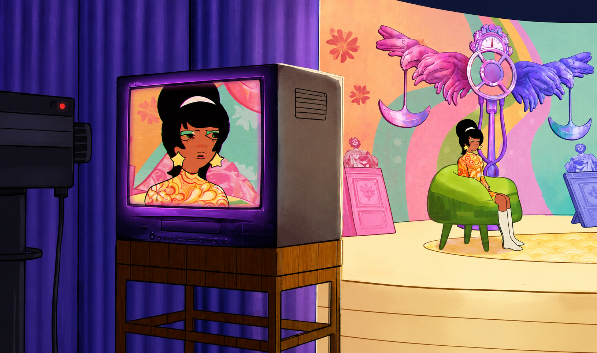
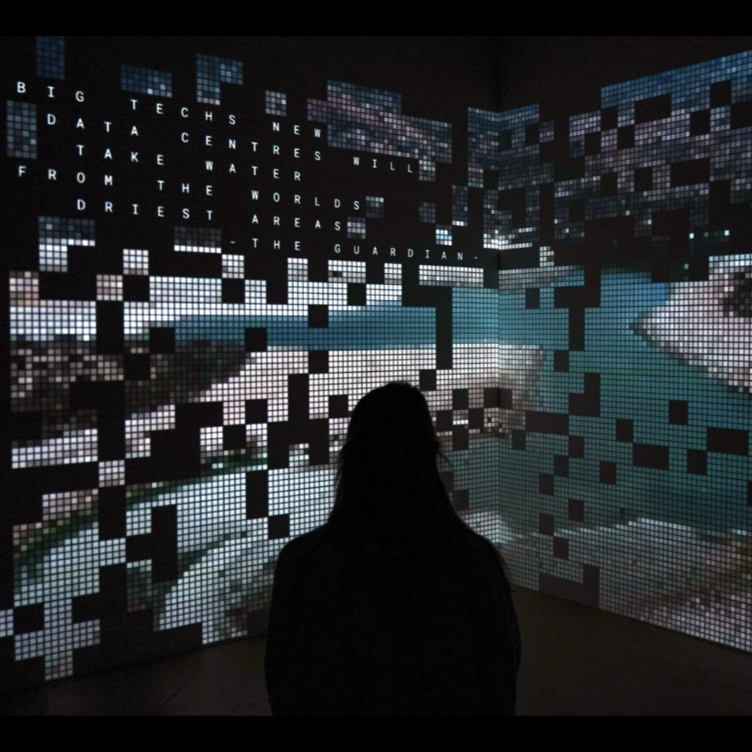
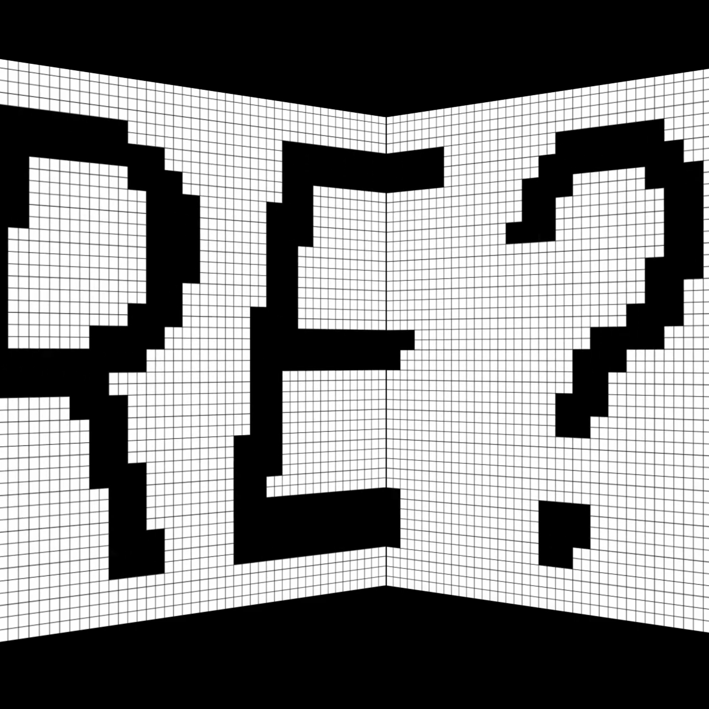
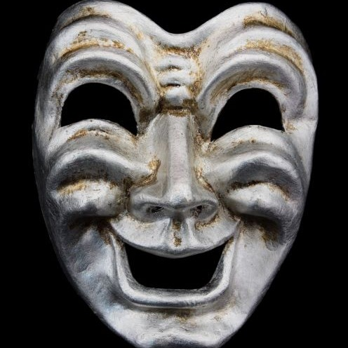
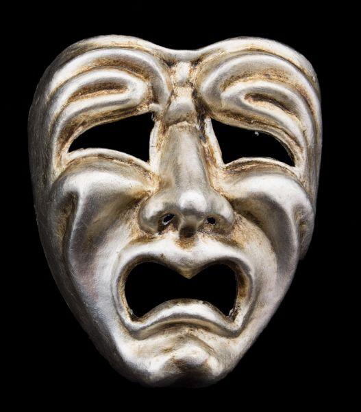

Film Scores
What's Your Verdict

What’s Your Verdict? is a short animated film about a man and a woman whose contradictory accounts of a night out are staged as a televised court show. The film explores conflicting perspectives, performance and the question of who gets to define the truth.
A film by Persephone Huynh Murphy and Anna Pazie. Music by Nicoline Janka. Created in collaboration with BA Animation at HSLU.
Cappuccino

The video installation explores how political and social systems shape perception and everyday behaviour, often becoming invisible through normalization. Following a gas-masked individual through an urban landscape, the work examines adaptation as a form of passive acceptance. The mask acknowledges danger while allowing the subject to continue daily life without confronting it. Inspired by the recent blockades in Serbia, the project asks how aware we are of the systems shaping our reality and how we choose to respond.
Video and concept by Ivana Čuturić and Vasilija Dobrić. Music, sound design and foley by Nicoline Janka. Presented in February 2026 at Palazzo della Libertà in Bergamo, Italy.
Installations
AI Fragments



AI Fragments is a six-minute audiovisual installation exploring the often-overlooked environmental impact of artificial intelligence. Using data on the water consumption of data centres, the work makes the physical infrastructure behind AI visible and raises questions about transparency, sustainability and the local consequences of growing digital demand.
Created by Hanna Risberg, Petra Weber. Sound and music by Nicoline Andrea Janka. Presented at Lichtfestival Luzern and Szenenwechsel 2026.
Performance
Housing Unit – Ritrovamenti
Housing Unit – Ritrovamenti is an interdisciplinary installation combining sculpture, sound and live performance. A sharp-edged metallic house reflects ideas of protection, confinement and the increasingly limited physical and mental space available to younger generations. The sculptural work is accompanied by a composition for soprano, piano, tuba and live electronics. Acoustic and electronic sounds merge into a single sonic environment, questioning where sound originates and where the boundary between the natural and artificial begins.
Installation by Sara Cavaioli. Music and live electronics by Nicoline Janka and Nicola Ortodossi. Presented at GAMeC – Spazio Zero in Bergamo, Italy.
Game audio
Mask Maker Mania


Welcome to Mask Maker Mania! You are a cursed Mask Maker. Complete your tasks as quickly as possible before your task board overflows, or you will die.
We make masks, for every creature. You might get cursed, but that's a feature.
This game was made in the span of two days for the Global Game Jam 2026.
Music, FX and lead art by Nicoline Janka. Programming by Dennis Dublin. Assistant programming by Hanna.